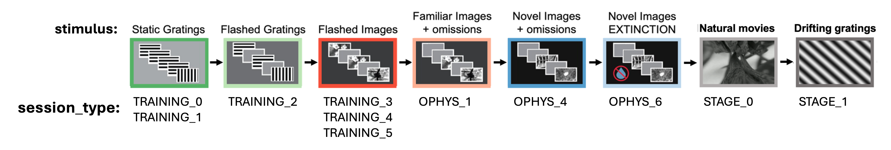
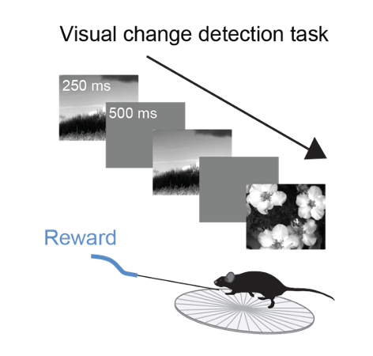
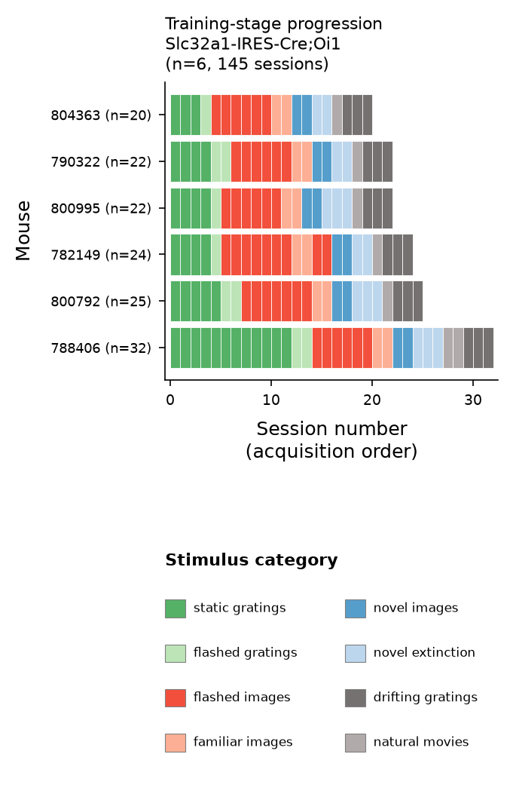
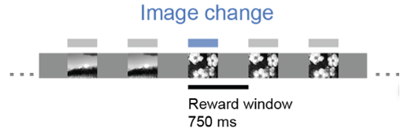
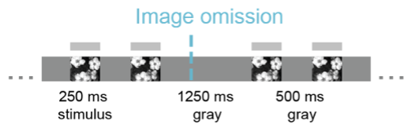
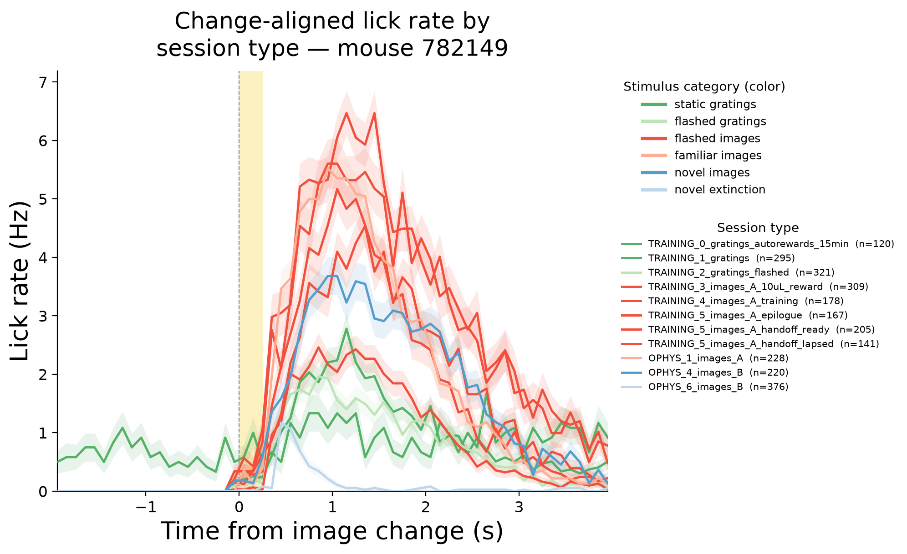

Visual Learning - Behavior#
The defining feature of the Visual Learning dataset is that imaging begins on the first day of training and continues every day thereafter. Mice are head-fixed under the microscope for every session of the training procedure, so the dataset contains a continuous neural record of the animal going from naive to expert, and then of the learned association being broken.

Fig. 18 Session sequence and stimulus categories#
Experimental Design#
The task is a no/no-go visual change detection task. The full task structure and parameters — how change times are drawn, how trial outcomes are defined, and what happens when a mouse licks before a change — are described in detail on the Visual Behavior Task page.

Fig. 19 change detection task#
Given the importance of the training procedure and session sequence to this dataset, the session types and their features and relevance for analysis are described here, in addition to the information that can be found on the Visual Behavior Task page.
The task is learned over a series of training stages that differ in the stimulus used and the temporal properties of the stimulus. This curriculum was designed to first introduce the basic task rule - detect changes to earn rewards - then introduce additional features including a working memory component, generalization across stimulus categories, generalization to novel stimuli, and extinction of learned associations. With a few exceptions, the training stages are identical to the Visual Behavior dataset, with the primary difference being that in vivo imaging occurs throughout the learning process in the Visual Learning dataset. In Visual Behavior, only well trained mice were imaged.

Fig. 20 Training progression for each mouse#
Mice progress through the training stages at their own pace, and transition between stages depending on their individual performance. Below we describe the training stages and session types in more detail.
Behavioral training sessions#
Training proceeds through a series of stages of increasing difficulty, and mice advance when they meet a performance criterion of d-prime greater than 1 on 2 of 3 consecutive days.
Mice initially learn the task with full-field static gratings that change
orientation. The first session, TRAINING_0 , lasts 15 minutes and delivers
water automatically after each change, with no requirement that the mouse
respond; this establishes the association between the stimulus change and
reward. During TRAINING_1 , mice must lick following stimulus changes to earn
water rewards.
Once mice perform the task at criterion level, they transition to TRAINING_2
where a 500ms gray screen inter-stimulus interval is added to the task. This
gray screen period makes the task more difficult by adding a working memory
component — the task of the mouse is to determine “is what I am seeing now the
same or different as what I saw 500 ms ago?”.

Fig. 21 250ms image presentations with 500ms gray inter-stimulus interval#
Natural images replace gratings at TRAINING_3 , using an 8-image set referred
to as image set A. This again increases the task difficulty and asks the mice to
distinguish images with naturalistic features rather than simplistic grating
stimuli. Reward volume is reduced from 10 µL to 7 µL at TRAINING_4 , and the
task parameters reach their final form at TRAINING_5 , where mice remain until
performance is stable.
The number of sessions spent at each stage varies between mice, since advancement depends on individual performance.
Image omissions#
During the initial TRAINING stages with flashed stimuli, the stimulus cadence
is highly regular - stimuli are presented for 250ms with a 500ms inter stimulus
interval. Once mice are well-trained and are familiar with the temporal
structure of the task, image omissions are introduced, interrupting the expected
stimulus timing. In these sessions, 5% of non-change stimuli are randomly
omitted, producing an extended gray screen period (1250ms instead of the typical
500ms).

Fig. 22 Image omissions are introduced starting in OPHYS_1#
Familiar and novel image sessions#
Once mice are performing the task well with image set A, they proceed through three additional session types. Each is acquired on two consecutive days, so that the first and second exposure to a given condition can be distinguished.
These session types begin with OPHYS , however recall that all sessions in
this dataset have ophys data — this session labeling scheme is a holdover from
the Visual Behavior dataset from which the Visual Learning dataset is derived.
In Visual Behavior, only well trained mice were imaged. In Visual Learning,
imaging happens throughout training, but the session type names were retained.
OPHYS_1 — familiar images with omissions. The mouse performs the task with
image set A, which it has seen throughout training and which is now highly
familiar. Image omissions are introduced at this point, and are present in all
subsequent OPHYS sessions.
OPHYS_4 — novel images with omissions. Image set A is replaced with image
set B, a second set of 8 natural images that the mouse has never encountered.
The task contingency is unchanged and rewards are still delivered; only the
images are new. The first OPHYS_4 session is the mouse’s first exposure to
image set B; by the second session the images have already been seen for an
hour.
Note that the Visual Behavior dataset has a cohort of mice where familiar and novel images were inteleaved in the same session; this is not the case for Visual Learning. In each well-trained imaging session, the 8 natural image stimuli are either all familiar (i.e. observed during training), or all novel (only observed once mice are well trained).
Extinction sessions#
In OPHYS_6 , rewards are no longer delivered. The mouse is water-restricted as
on any other day, the lick spout remains in its usual position, and the images
continue to change on the same schedule — but licking no longer produces water.
Nothing signals the change in advance; the mouse discovers it only by responding
and receiving nothing.
This makes OPHYS_6 a learning experiment run in reverse. Over weeks of
training the animal acquired an association between a visual event and a reward,
and in these sessions that association is violated on every trial and the
learning is extinguished. Because the same neurons have been tracked throughout
acquisition, their activity can be followed as the association is undone.
The behavioral signature is a collapse in responding. In a representative extinction session, 305 of 330 go trials are misses. Licking to image changes, which is robust in every rewarded session type, falls to near zero.

Fig. 23 Change-aligned lick rate by session type#
Low performance in these sessions is the phenomenon of interest; the mouse is motivated and the apparatus is unchanged; mice stop responding because the reward association has been removed.
A note for those familiar with the Visual Behavior Ophys dataset: that dataset
also contains a session type called OPHYS_6 , but it means something else
there. Visual Behavior also has interleaved passive sessions, in which the mouse
is given its daily water beforehand and the lick spout is retracted, so the
manipulation is motivational and the learned contingency is left intact. The
Visual Learning dataset contains no passive sessions of that kind.
Passive stimulus sessions#
After the task sessions are complete, mice view visual stimuli passively, with no reward and no behavioral requirement. These sessions characterize how each neuron responds to classical visual stimuli, independent of task demands. The stimuli used are shared with other Allen Institute datasets and are defined in the visual stimulus list ; see Stimuli and Behavioral Tasks for how they are used elsewhere in the databook.
STAGE_0 — natural movies. One session presenting
natural movie clips, repeated many times. These stimuli are
feature rich and contain both temporal and spatial structure. Because of the
large number of repeats of some of the movie clips, stability and repeatability
of neural activity structure can be explored.
STAGE_1 — drifting gratings. Three sessions presenting
drifting gratings that vary in direction, temporal
frequency, and contrast. These paramaterized stimuli allow analyses of neural
selectivity and tuning properties. Adaptation and state modulation can also be
explored within and across the 3 repeated sessions.
Because these sessions follow the task sessions in the same tracked neurons, each neuron can be characterized both by what it encodes during behavior and by how it responds to parametrically varying visual stimuli.
Note that mice have seen oriented gratings before reaching STAGE_1 , since
TRAINING_0 and TRAINING_1 use full-field static gratings. Orientation is
therefore not novel at this point, though drift, temporal frequency ,
and spatial frequency may be. The interval between the passive sessions
and the preceding task sessions varies across mice, from days to several weeks.
Session Types Summary#
Fig. 24 Session sequence and stimulus categories#
The session_type field identifies the training or imaging stage of each
session. Behavioral training sessions begin with TRAINING_ , sessions in well
trained mice begin with OPHYS_ , and passive stimulus sessions begin with
STAGE_ . The image set in use is included in the name where applicable.
|
Stimulus |
Reward |
Omissions |
|---|---|---|---|
|
static gratings |
automatic |
no |
|
static gratings |
earned |
no |
|
flashed gratings |
earned |
no |
|
flashed images, set A |
earned, 10 µL |
no |
|
flashed images, set A |
earned, 7 µL |
no |
|
flashed images, set A |
earned |
no |
|
flashed images, set A |
earned |
no |
|
flashed images, set A |
earned |
no |
|
familiar images, set A |
earned |
yes |
|
novel images, set B |
earned |
yes |
|
images, set B |
none delivered |
yes |
|
natural movies |
none |
n/a |
|
drifting gratings |
none |
n/a |
Note that the OPHYS_ prefix does not distinguish which sessions have imaging
data — every session type listed above does. The naming scheme is a holdover
from the Visual Behavior dataset, in which only well trained mice were imaged.